← 返回 408 复盘中心
怎么读这一页： 正文是书上的内容，我只做了结构重排和取舍 。色块分两个维度——① 按来源：
必记结论 （书上的考点句）、
我的补讲 、
陷阱 。② 按动作：
背景 · 考试不碰 ——虚线灰块，明确告诉你哪几段可以快速划过 ；
知识串联 ——绿块，就地标出这里和后面哪一章、和《组成原理》《操作系统》哪个概念是同一件事 。📄 p.N 点开跳到原书对应页；紫色 考点追踪 是王道标注的真题年份。⚠️ 本章的读法：29 页被劈成泾渭分明的两半。
1.1（15 页）出 5 道真题，全部是计算题；1.2（13 页）出 9 道真题，全部是概念题。
两半的读法完全不同——1.1 要动笔算，1.2 要抠字眼。 1.1 的计算题只有一个母公式
T ＝ k·r + (m−1)·r，四道真题都是它的变形；
1.2 的概念题只有一件事 ——「这归哪一层管」 ，九道真题全卡在层次归属上。
读到这两处请把速度降下来。
📄 p.1
本章定位
我的补讲 · 这 126 道题该怎么刷（先看分布再动手）
我把本章 126 道题按小节数了一遍，题量与真题的分布是两张不同的图 ：
小节 页数 题量 真题 真题/页 建议 1.1.1–1.1.3 概念·组成·功能 3 12 0 0 快刷，只抠 internet vs Internet 1.1.4 三种数据交换方式 3 20 4 1.33 逐题动笔算，母公式必须闭眼写出 1.1.5 计算机网络的分类 2 9 1 0.5 快刷，把五套分类的「切法」记住 1.1.6 计算机网络的性能指标 3 19 1 0.33 动笔算；四种时延的自变量别记混 1.2.1 计算机网络分层结构 2 12 1 0.5 中速；PDU/SDU/PCI 的式子要能自己推 1.2.2 协议、接口与服务 2 14 1 0.5 中速；协议三要素看图判定 1.2.3 OSI 参考模型 4 28 6 1.5 逐题过，错题全部进错题本重刷 1.2.4 TCP/IP 与两模型比较 3 12 1 0.33 中速；四条差异必须能背
⟹ 刷题顺序建议：先 1.2.3（28 题 6 真题）→ 再 1.1.4（20 题 4 真题）→ 然后 1.1.6 → 最后扫其余四节。
理由：这两节占了全章 10/14 的真题，先把最贵的啃下来。
⚠️
但别被"真题/页"骗了 ——1.1.6 的真题密度只有 0.33，可是
它是 1.1.4 那四道计算真题的公式来源
（时延四件套、时延带宽积、瓶颈带宽都在这一节定义）。
1.1.6 读不透，1.1.4 就只能背答案。 考纲内容 ：（一）计算机网络概述 ：计算机网络的概念、组成与功能；计算机网络的分类；计算机网络的性能指标。（二）计算机网络体系结构与参考模型 ：计算机网络分层结构；计算机网络协议、接口、服务的概念；ISO/OSI 参考模型和 TCP/IP 模型。
王道的复习提示 ：本章主要介绍计算机网络体系结构的基本概念，读者要在理解的基础上适当记忆。重点掌握三种数据交换方式的特点及相关的计算 ，协议、接口和服务的概念，ISO/OSI 参考模型和 TCP/IP 模型各层的基本功能。熟悉有关网络的性能指标，特别是时延、带宽、速率等的计算 。
知识串联 · 第 1 章是全书的目录 ，也是四科的接线盒
分层 1.2 讲的五层模型就是本书第 2–6 章的目录 ：
物理层＝ch2 · 数据链路层＝ch3 · 网络层＝ch4 · 传输层＝ch5 · 应用层＝ch6。
本章每讲一层的功能，其实是在给后面五章各写一句提纲。 存储转发 1.1.4 的存储转发＝组原 ch6「总线事务」的排队思想、OS ch5「缓冲区」的同一件事——
都是"先收全再往下走" 。流水线 1.1.4 分组交换能提速，机理与组原 ch5「指令流水线」完全一致 ：
把大任务切小，让各段并行 。连公式都同构（组原：k+n−1 个周期；网络：k·r+(m−1)·r）。瓶颈 1.1.6 的"实际可用带宽取最小值"＝组原 ch3「Cache-主存-辅存层次的瓶颈」＝
OS ch5「I/O 系统吞吐率受最慢一环限制」。三科同一个木桶原理。 分层抽象 1.2 的"下层对上层透明"＝OS 的"虚拟机器"＝组原的"计算机系统层次结构"。
三科都在讲同一件事：用分层把复杂度关进盒子。
📄 p.1
1.1 计算机网络概述
1.1.1 计算机网络的概念
必记 · 定义（三个关键词一个都不能少）
计算机网络是将众多分散的、自治的 计算机系统，通过通信设备与线路 连接起来，
并由功能完善的软件 实现资源共享和信息传递 的系统。节点（Node） 和连接这些节点的链路（Link） 组成。
节点可以是计算机、集线器、交换机或路由器。
我的补讲 · 定义里三个词，各挡掉一个干扰项
书上说 「分散的、自治的计算机系统」
→ 潜台词是 ：出题人会用"隔壁那个真概念"来做干扰项，
而三个关键词正好各挡一个
→ 所以能考 ：
关键词 挡掉谁 为什么 自治 多机系统（共享内存紧耦合） 共享内存的多处理机不自治——断开就整机瘫痪 互连 软件模块 软件模块不涉及物理连接 集合体 分布式系统 分布式系统强调"共同完成一项任务"，是网络之上 的应用形态
「自治」到底自治到什么程度 ：
每台机器有自己的 OS、有自己的硬件资源 。
⚠️
不是"彼此不来往" ——网络的目的恰恰是让它们联系更紧密。
把"自治"误读成"独立无联系"，是本节唯一会丢分的地方。 陷阱 · internet 与 Internet，全章第一个必背分界
书上专门用一段强调"两个含义相差很大的名词"，说明它一定会考：
internet（互连网） Internet（互联网／因特网） 词性 通用名词 （可数，有很多个）专用名词 （全世界只有一个）协议 任意通信协议均可，不要求 TCP/IP 必须采用 TCP/IP 协议族 范围 泛指多个网络互连而成的网络 当前全球最大的、开放的特定网络
怎么造干扰项 ：出题人只需把"必须 TCP/IP"这顶帽子扣到小写 internet 头上，或者两边都扣。
记住"专用 的那个才有专用 的协议"就够了。 我的补讲 · 「网络 → 互连网」的层级，靠连接设备 划线
书上说 「多个网络还可通过
路由器 互连，构成覆盖范围更广的计算机网络」
→ 潜台词是 ：
两级结构的分界不在"大小"，而在
用什么设备连 → 所以能考 设备与层次的对应题。
网络 ： 把「多台计算机」连起来 ← 集线器 / 交换机
互连网 ： 把「多个网络」连起来 ← 必须是路由器
为什么非路由器不可 ：只有路由器工作在网络层、看得懂 IP 地址，才能跨网转发。
交换机只认 MAC 地址，出不了本网。 知识串联 · 这条设备界线，本章后面还要考一次
设备层次 「网络内用交换机、网络间用路由器」这句话，
到 1.2.3 节的 2016 真题 就变成「路由器/交换机/集线器的最高功能层分别是 3/2/1 」；
到 ch3 会变成「交换机隔离冲突域但不隔离广播域」；
到 ch4 会变成「路由器隔离广播域」。四处说的是同一条界线。
背景 · 考试不碰细节，只留一句
ISP 那一段（"最终用户通过 ISP 接入互联网……向 ISP 缴纳费用即可获得 IP 地址使用权"）可以快读 ，
它在选择题里只以一个形态出现：「互联网上的主机都必须 拥有 IP 地址才能接入互联网」 。
记住这个双向箭头即可，ISP 的多级结构、地址批发零售等内容第 4 章才正面讲。
📄 p.2
1.1.2 计算机网络的组成
必记 · 三个角度是三套并列的切法，别混着背
看的角度 切成几块 关键句 组成部分 硬件 + 软件 + 协议 协议是计算机网络的核心 工作方式 边缘部分 + 核心部分 边缘＝所有供用户直接使用的主机 ；核心＝大量网络及互连它们的路由器 功能组成 通信子网 + 资源子网 通信子网管传输 ，资源子网管共享
硬件＝主机 + 通信链路 + 交换设备；软件＝实现资源共享的系统软件 + 应用工具（E-mail、FTP、聊天程序）。
协议如同交通规则规范车辆行驶，规定了数据在网络中传输时必须遵循的规则。
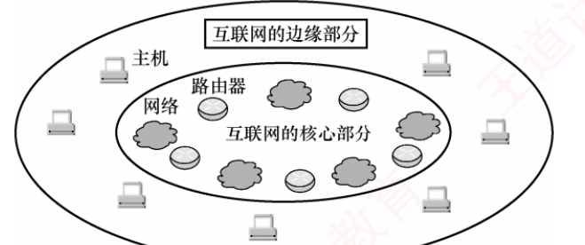
图 1.1 互联网核心部分与边缘部分的示意图（内椭圆＝核心部分：网络云 + 路由器；外圈＝边缘部分：主机）
我的补讲 · 一句话分清边缘与核心：你能坐在前面敲键盘的，就是边缘
书上说 核心部分"为边缘部分提供
连通性与交换服务 "
→ 潜台词是 ：
主机只产生和消费数据，不承担"替别人转发"的职责 → 所以能考 「用户主机属不属于核心部分」这种判断题（答：不属于）。
边缘部分 ＝ 主机（端系统） ← 数据的源 和宿
核心部分 ＝ 网络 + 路由器 ← 只负责把数据送过去
🔍
这条到第 4 章会变成一个具体判据 ：主机只有一块网卡时不做转发，路由器有多个接口才转发。
我的补讲 · 「边缘/核心」与「通信子网/资源子网」不是同一把刀
这两组二分覆盖的范围几乎重合，
但切法不同，考试问法也不同 ：
按什么切 题干怎么问 边缘 / 核心 按设备 （主机 vs 路由器） "由什么设备构成" 通信子网 / 资源子网 按层 （下三层 vs 传输层及以上） "由哪几层构成"
⟹ 看到"层"就答子网，看到"设备"就答边缘/核心。
这个区分在 1.2.3 节的"（ ）利用通信子网提供的服务实现两个进程之间的端到端通信"那道题里直接用得上（答：传输层）。 知识串联 · 「通信子网」这三层，正好是本书 ch2–ch4
通信子网 ＝ 物理层（ch2 ）+ 数据链路层（ch3 ）+ 网络层（ch4 ），
三章共 194 页，占全书 303 页的三分之二 ；
资源子网 ＝ 传输层（ch5 ）+ 应用层（ch6 ），共 80 页。
⟹ 这个二分不只是概念，它就是本书的篇幅分配图 ——
你后面三分之二的时间会花在"怎么把比特送到对面"，只有三分之一花在"送到之后怎么用"。
📄 p.2
1.1.3 计算机网络的功能
必记 · 五大功能，前三个是"三大主要功能"
① 数据通信 ——最基本且最重要 的功能，实现联网计算机之间各种信息的传输。资源共享 ——软件、数据或硬件的共享，使资源互通有无、分工协作。分布式处理 ——某台负荷过重时，把复杂任务分配给其他计算机。提高可靠性 ——各台计算机可通过网络互为备份。负载均衡 ——工作任务均衡分配，避免有的过载有的闲置。
陷阱 · 书上有两处口径，问法不同答案不同
正文列的是五大 功能，而习题解析说的是"三大 主要功能 ＝ 数据通信、资源共享、分布式处理"。
问「主要 功能有哪些」 → 按三个 答
问「哪个不是 网络的功能」→ 按五个 答（④⑤ 也是功能，不是干扰项）
问「最基本、最重要 的」 → 数据通信
⚠️
唯一真正的错项长这样：「使各计算机相对独立」 ——
它与网络的定义直接冲突（网络要让计算机联系
更紧密 ）。
注意"自治"说的是"每台能独立工作"，不是"彼此不来往"，两个词别混。 我的补讲 · 为什么"最基本"是数据通信而不是资源共享
书上说 数据通信是"最基本且最重要"的功能
→ 潜台词是 其余四项都建立在它之上
→ 所以能考 「哪个是最基本功能」这种排序题：
资源共享 需要先能「把资源传过去」
分布式处理 需要先能「把子任务发出去」
提高可靠性 需要先能「把备份同步过去」
负载均衡 需要先能「把任务调度过去」
└── 全部依赖：数据通信 知识串联 · 五大功能，各自在后面变成一整块内容
资源共享 → ch6 的 FTP（文件资源）、WWW（信息资源）、DNS（名字资源）——
应用层那一章讲的全部是"怎么共享"。 数据通信 → ch2–ch5 四章全在讲"怎么把数据送到"，
这就是为什么它是"最基本"的功能：其余四项都得先有它。 提高可靠性 → ch4 的路由算法在链路故障时自动改道、
ch5 的 TCP 重传——"互为备份"在协议层的落地。
📄 p.3
1.1.4 电路交换、报文交换与分组交换 考点追踪 2010 · 2013 · 2023 · 2025
我的补讲 · 本节是全章第一重心，读法与别处不同
本节只有 3 页正文，却出了 4 道计算真题（1.33 道/页，全章最高）。
更关键的是：这 4 道题共用同一个公式，只是包装不同 。
所以本节的正确读法是：先把"存储转发"和"流水线"两个机制看懂，再去背结论表。
反过来读（先背表 1.1 再做题）必然算错。
1. 电路交换
必记 · 三个阶段 ＝ 资源的三种状态
建立连接 （占用通信资源）→ 传输数据 （持续占用）→ 释放连接 （归还资源）。端到端物理通路 ，由沿途交换设备和链路逐段连接而成；
通信过程中该通路始终被双方独占 ，直至通信结束才释放。
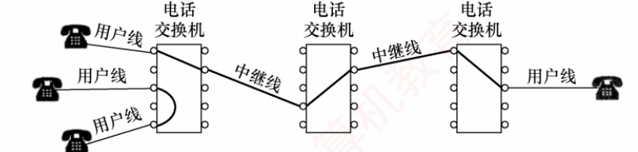
图 1.2 电路交换示意图（三台电话交换机；用户线 + 中继线逐段接成一条专用物理通路）
我的补讲 · 「独占」一个词，长出四优四缺
书上分列了 4 个优点和 4 个缺点 ，看似要背 8 条
→ 潜台词是 它们全部从"独占"这一个性质推出来
→ 所以能考 任意一条，但你只需记住一个字：
因为独占，所以…… 成了优点 成了缺点 通路专用、比特流直达 通信时延小 · 有序传输 · 无冲突 · 实时性强 — 空闲时别人也用不了 — 线路利用率低 （常不足 10%，甚至低于 1%）必须先建链 — 建立连接时间长 中间节点不存储 — 灵活性差（任一处故障要重建）· 难以差错控制
⭐
最后一行是本节最值钱的一条 ：
「不存储」这一个性质，同时解释了"没有存储转发时延"（优点）
和"不具备差错控制能力"（缺点） 。
要检错就得先把数据完整拿到手里算一遍——电路交换根本不接手。 背景 · 考试不碰细节，只留两个数字
电路交换那四优四缺的具体措辞 可以快读 （"通信时延小""有序传输""没有冲突""实时性强"这类形容词
在选择题里从不单独出现，出现的一定是表 1.1 的对比行）。本段只需带走两个数字：
① 计算机通信是突发式 的（高频、少量）；② 用电路交换时线路利用率往往不足 10%，甚至低于 1% 。
这两个数字就是"为什么要发明分组交换"的全部动机。
知识串联 · 「三阶段」结构后面还会出现两次
面向连接 凡"面向连接"，必有建立/传输/释放三段。
到 ch4 是虚电路服务 的三阶段；到 ch5 是 TCP 的三次握手 / 数据传输 / 四次挥手 。
本节这三个词，是后面两章两个大考点的模子。
2. 报文交换
必记 · 存储转发的定义（一切时延计算的地基）
用户数据附加源地址、目的地址等控制信息后封装成报文（Message） 。
报文交换采用存储转发 ：整个报文先传送到相邻节点，被完整接收并存储 后，
节点根据转发表将其转发至下一跳，如此逐跳转发 直至目的端。每个报文可独立选择路径。
我的补讲 · 「必须收完整个单元」五个字，撑起本章全部计算题
书上说 "被
完整接收并存储 后……才转发"
→ 潜台词是 ：
每经过一个节点，就要多付一次「整个单元的发送时延」 → 所以能考 ：
k 段链路、每段发送时延 r
单个单元端到端要 k·r （不是 r）
⚠️
与"直通交换"划清界限 ：收到第一个比特就转发的叫 cut-through，
是 ch3 交换机的一种转发方式，
不是本章的模型 。
本章一律按"收完再转"算。 必记 · 报文交换的三个缺点，全部源于"报文太长"
① 存储转发时延高 ——必须完整接收整个报文才能开始转发。缓存开销大 ——报文大小没有限制，要求交换节点配备大容量缓存。错误处理低效 ——报文越长出错概率相对更大，重传整个报文的代价大 。
知识串联 · 「太长了怎么办」是整个 408 网络的主线
切分与限长 报文太长 → 分组交换切小 + 限长 （本节）；
到 ch3 变成「帧长要有 MTU 上限」；到 ch4 变成 IP 分片 ；
到 ch5 变成 TCP 的 MSS 。四章都在跟同一个问题较劲。
3. 分组交换
必记 · 分组的构成与转发过程
源主机发送前先将较长的报文划分为若干较小的等长数据段 ，
每段前添加由必要控制信息（源地址、目的地址、分组编号等）组成的首部 ，构成分组（Packet） 。分组交换机（如路由器） 收到一个分组后先缓存，然后从首部提取目的地址，
查找转发表，转发给下一个分组交换机；经多个交换机的存储转发，分组最终到达目的主机。
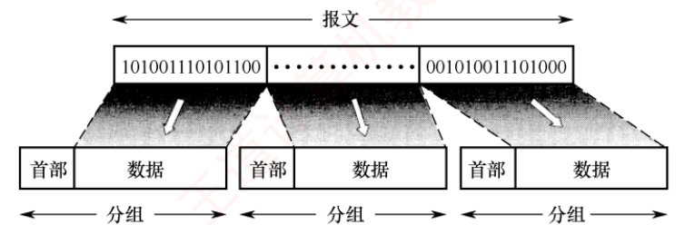
图 1.3 构成分组的过程（长报文被切成若干等长数据段，每段前加首部 ⟹ 分组）
我的补讲 · 分组交换真正的杀手锏只有一条：流水线
书上列了 3 条"优势"，但只有第 2 条是本质的：
「传输效率高。分组可逐个发送，
实现流水线操作 ，即
后一个分组的接收可与前一个分组的转发并行 ，
从而减少整体传输时间。」
→ 潜台词是 ：
切小的目的不是省空间，是让各段链路同时忙起来
→ 所以能考 「分组交换减少传输时延的机理是什么」（答：流水线，
不是速率变快 ）。
报文交换（整报 8Mb，2 段链路，10Mb/s）
甲──── 0.8s ────▶R ──── 0.8s ────▶乙 共 1.6s
（R 必须收完整报才能转 ⟹ 两段完全串行 ）
分组交换（切成 800 个 10kb 分组）
甲─1ms─▶R─1ms─▶乙
甲─1ms─▶R─1ms─▶乙 ← 后块的接收与前块的转发「并行」
甲─1ms─▶R… 共 2r+(m−1)r ＝ 801ms
⭐
这正是 2013 真题的原题场景：1600ms → 801ms，几乎砍掉一半。
链路速率一直是 10Mb/s 没动过——省下来的时间全部来自并行。 必记 · 分组交换的三个缺点（别只背优点）
① 存在存储转发时延 ——比报文交换小，但相比电路交换仍存在，且要求节点处理能力更强。需要传输额外的信息量 ——每个数据段都要附加控制信息，
使传送的信息量增大约 5%～10% ，增加控制复杂度、降低通信效率。分组可能失序、丢失或重复 ——采用数据报服务 时，分组可能经不同路径到达，
需在目的主机按编号重排序；采用虚电路服务 可避免失序，但需经历建立/传输/释放三个阶段。
陷阱 · 三个最常见的"想当然"
① 「分组交换降低了误码率」——错。 分组变短确实让单个分组 出错概率变小、重传代价变小，
但误码率是链路的物理属性 ，不会因为切分组而下降。降低的是"重传数据量"，不是"误码率"。 「分组交换的传播时延大」——错。 传播时延 ＝ 距离 ÷ 传播速率，与用哪种交换方式毫无关系。 「分组交换信道利用率低」——说反了。 表 1.1 里它的线路利用率是"非常高"，全场第一。
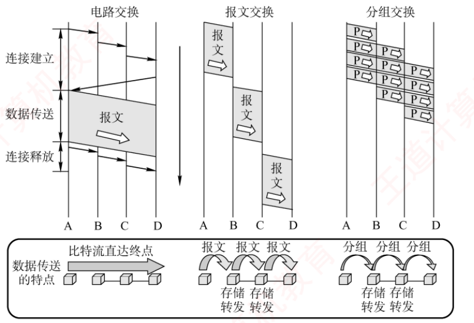
图 1.4 三种交换方式的比较（上：时空图；下：数据传送的特点。电路交换比特流直达终点，报文/分组交换要在中间节点存储转发 ）
必记 · 表 1.1 三种交换方式的特性对比
特性 电路交换 报文交换 分组交换 完成传输所需的时间 最少 最多 较少 存储转发时延 无 高 较低 通信前是否需要建立连接 是 否 否 节点的缓存开销 无 高 低 是否支持差错控制 不支持 支持 支持 数据是否有序到达 是 是 否 是否需要额外的控制信息 否 是 是（且占比较大） 线路分配的灵活性 不灵活 灵活 非常灵活 线路利用率 低 高 非常高
我的补讲 · 表 1.1 只有三行 是电路交换赢，记住这个不对称
九行里电路交换只在前三行占优 （完成时间最少、无存储转发时延、无缓存开销），
其余六行全是分组交换赢 。选择题基本白送。 但第一行"电路交换最少"必须带前提 ：书上原话是
「当需连续传输大量数据 ，并且传输时间远大于连接建立时间 时，采用电路交换更为合适」。
→ 潜台词是 ：这一行与正文"分组交换时延更小、更灵活，尤其适合突发式数据通信"并不矛盾 ，
两句话的统计口径不同 （一个含建链、针对连续大量数据；一个不含、针对突发少量数据）
→ 所以能考 ：做题时先找题干给的是哪种场景 。2025 真题正是踩在这个前提里 ：2MB 文件下 TCS 反而最小 （1.600032s），
因为 32μs 的建链时间在 1.6s 面前微不足道。
必记 ⭐⭐ · 本节母公式（四道计算真题共用）
┌── 首个分组「灌满流水线」： k·r
T ＝ │
└── 其余 m−1 个「排队流出」：(m−1)·r
＝ (k + m − 1)·r 带传播时延时再加 k·p
其中
k ＝ 链路段数（＝中间设备数 + 1） 、
m ＝ 分组数 、
r ＝ 每段发送时延 、
p ＝ 每段传播时延 。
我的补讲 · 母公式的两个前提，一错就全错
① 各段速率必须相同 才能直接用这个式子。速率不同时，稳态节拍由瓶颈段 决定
（＝ max(各段发送时延)），2025 真题就是这种情形。 k 数的是"链路段数"，不是"路由器个数" ——1 个路由器对应 2 段，2 个路由器对应 3 段。
2010 题 k=3、2013 题 k=2、2023 题 k=2，都是这么数出来的。 最常见的错法是"把流水线当串行" ——算成 k·r·m（每个分组各走一遍全程）。
本章练习系统的错因标签里专门有一条「流水线当串行算」，就是给这个错法准备的。
四道真题的选项里都埋了这个错误答案。
我的补讲 · 四道计算真题的包装差异（一张表看穿）
年份 答案 包装在哪 要多做的一步 2010 80.16ms 分组 1000B 含 20B 首部 分组数要用有效数据 980B 去除，不是 1000B 2013 1600 / 801ms 同时问报文交换 报文交换两段完全串行 ，与分组交换对比 2023 80.10ms 不给传播时延，给时延带宽积 1000b 先算 1000b ÷ 100Mb/s ＝ 0.01ms 2025 TMS >TPS >TCS 三段速率 10/100/1000Mb/s 各不相同 稳态节拍取瓶颈段 （320μs）；三种方式一起比
⭐
2025 那道最值得单独记 ：T
PS 与 T
CS 只差 3.2μs ，考场上没时间全算，用差值法：
两者主体都是 1.6s（＝16Mb ÷ 10Mb/s，瓶颈段决定）
电路交换额外付：建链 32μs
分组交换额外付：首分组走完后两跳 ＝ 32 + 3.2 ＝ 35.2μs
⟹ 35.2 > 32 ⟹ T_PS > T_CS 📄 p.5
1.1.5 计算机网络的分类
必记 · 五套分类法（每套是一把独立的刀，互相正交）
按什么分 分成什么 要记的数字/口径 分布范围 广域网 WAN / 城域网 MAN / 局域网 LAN / 个人区域网 PAN MAN 直径约 5～50km ；LAN 几十米～几千米；WAN 几十～数千千米传输技术 广播式 / 点对点 传统上 LAN 用广播、WAN 用交换 拓扑结构 总线形 / 星形 / 环形 / 网状 前三种多用于局域网，网状多用于广域网 使用者 公用网 / 专用网 公用＝运营商建、面向公众；专用＝单位自建、仅限内部 传输介质 有线 / 无线 有线：双绞线、同轴、光纤；无线：蓝牙、Wi-Fi、微波、无线电
另外习题解析还补了一套：
按数据交换技术 分为电路交换网、报文交换网、分组交换网。
背景 · 考试不碰，扫一眼即可
「按使用者分类」和「按传输介质分类」这两小段可以快读 ——
公用网/专用网、有线/无线的具体例子（铁路、电力、军队；蓝牙、Wi-Fi、微波）
在真题里从未单独出题，只作为"五套分类法配对题"的一个选项出现 。
带走两句就够：公用网＝运营商建、面向公众；专用网＝单位自建、仅限内部。
其余笔墨留给 1.1.4 和 1.1.6。
我的补讲 · 这类题的解法是"记切法"，不是"记结果"
书上把五套分类平铺直叙地列了一遍 → 潜台词是 ：
考试不会问"WAN 是什么"，只会问
"这种分法的依据 是什么"
→ 所以能考 ：把五个"依据"和五组"结果"配对。
看到「广域/城域/局域」 → 依据是作用范围
看到「广播式/点对点」 → 依据是传输技术
看到「有线/无线」 → 依据是传输介质 ← 与上一条只差一个字！
看到「星形/总线形/环形」→ 依据是拓扑结构
⚠️
「传输技术」与「传输介质」只差一个字，分出来的东西完全不同 ——这是本节最容易读错的地方。
📌
五套分类互相正交 ：同一个网络可以
同时 是"广域网 + 专用网 + 点对点网络 + 网状拓扑 + 分组交换网"。
读题时先认准问的是哪一套。 我的补讲 · MAN 有一句话决定了很多题目为什么只写两分法
书上说 「目前城域网大多采用以太网技术 ，因此有时也被归入局域网的讨论范畴 」
→ 潜台词是 ：MAN 在实践中已被 LAN 吸收
→ 所以能考 ：很多题目只出现 LAN 和 WAN 的二分，MAN 不是被漏掉了，是被归并了 。
看到"局域网与广域网"的二分题不要慌。 四个范围里只有 MAN 给了明确数字（5～50km），所以它最可能被单独考。
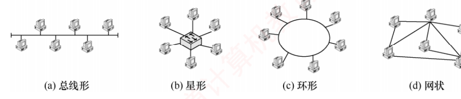
图 1.5 几种不同的网络拓扑结构：(a) 总线形 (b) 星形 (c) 环形 (d) 网状
必记 · 四种拓扑，各记一条"命门"即可
拓扑 优点 命门（缺点） 总线形 建网容易、增减节点方便、节省线路 总线任意一处故障都会影响全网 ；重负载下效率低星形 便于集中控制与管理 成本较高；中央设备对故障敏感 环形 可用双环提高可靠性（典型＝令牌环局域网） 信号沿环单向 传输，单环时任一处断即断环 网状 可靠性高、容错能力强 控制复杂、线路成本高
网络拓扑结构指网络中
节点 与
通信线路 之间的几何排列关系，
主要描述通信子网的结构 。四种基本拓扑
可相互组合 构成更复杂的混合网络。
陷阱 · 总线形与星形的命门长得一样，但位置不同
两者都是"一处坏、全网瘫"，但坏的地方不一样：
总线形 → 坏在「线 」上（单根传输线连所有计算机）
星形 → 坏在「中央设备 」上（交换机或路由器）
选择题最爱把这两个对调。 我的补讲 · 星形网络的中央设备用什么，决定了它的逻辑 拓扑
书上只说中央设备"通常为交换机或路由器" → 潜台词是 还有一种常见但不在此列的选择（集线器）
→ 所以能考 「物理星形 ≠ 逻辑星形」：
中央设备 物理拓扑 逻辑拓扑 冲突域 集线器 Hub 星形 总线形 （广播）全网共 1 个 （不隔离） 交换机 Switch 星形 星形（定向转发） 每端口 1 个 （隔离冲突域）
⟹ 用集线器连成的星形网，本质上仍是共享总线 ：所有端口共享带宽，同一时刻只能一对通信。
知识串联 · 「广播式 vs 点对点」把 ch3 劈成了两半
争信道 广播式网络所有站共享一条信道 ⟹ 会碰撞 ⟹ 需要
ch3 的 3.5 介质访问控制 整整一节（CSMA/CD、CSMA/CA、令牌传递）来解决；
点对点链路两端独占 ⟹ 不需要争 ⟹ 直接用 PPP 协议 。
"要不要争信道"这一条，决定了 ch3 你要读哪半边。 收下再过滤 广播式网络里"所有计算机都能收听到，靠检查目的地址决定是否接收"
⟹ 到 ch3 变成网卡按 MAC 地址硬件过滤 ；关掉过滤就是混杂模式 （抓包工具的原理）。
📄 p.7
1.1.6 计算机网络的性能指标 考点追踪 2010 · 2013 · 2023 · 2024 · 2025
我的补讲 · 本节真题密度低，但它是上一节四道真题的公式仓库
1.1.6 只出了 1 道真题（2024 吞吐量），密度 0.33/页，看着不重要 → 潜台词是 ：
它的价值不在自己出题，而在时延四件套、时延带宽积、瓶颈带宽这三个定义全在这一节
→ 所以 1.1.4 的四道计算真题，公式全部来自这里。
本节读不透，上一节就只能背答案。
知识串联 · 性能指标这一节，是四科共用的一套"度量衡"
速率与带宽 组原 ch6 总线 算"总线带宽 ＝ 宽度 × 工作频率 × 通道数"，
与本节"带宽＝最高数据传输速率"是同一个量纲；
组原那里的坑（时钟频率要乘、工作频率不能再乘）与本节的坑（K 与 k 的进制）性质相同——都是单位陷阱。 吞吐量 组原 ch6 的"有效数据传输率 ＝ 数据量 ÷ 事务总时间"＝本节的吞吐量；
OS ch5 算磁盘"数据传输率"也是同一套思路。三科都在区分"理论上限"与"实测值"。 排队时延 OS ch2 的调度 算周转时间时的"等待时间"、
OS ch5 磁盘调度 的"寻道 + 旋转延迟 + 传输"，与本节的四种时延是同一种拆法：
把总时间拆成几段各自独立的分量，再逐段求和。
1. 速率 · 带宽 · 吞吐量
必记 · 三个容易混的速度类指标
速率（Speed） ：节点在数字信道上传送数据的速率，也称数据传输速率、数据率或比特率 ，
单位 b/s （bit/s，有时写作 bps）。带宽（Bandwidth） ：在计算机网络中指数字信道所能支持的最高数据传输速率 ，单位 b/s。
（在通信领域它指信号的频率范围，单位 Hz。） 吞吐量（Throughput） ：单位时间内通过某个网络（或信道、接口）的实际数据量 ，
用于对实际网络进行测量，评估真实可达到 的数据传输能力。
背景 · 本章不碰，ch2 才用
「带宽在通信领域指信号的频率范围、单位 Hz」这半句，在第 1 章不会考 ——
本章所有题目里的带宽一律是"最高数据传输速率、单位 b/s"。
那个 Hz 口径要到 ch2 的奈奎斯特公式 C ＝ 2W·log₂V 与香农公式 C ＝ W·log₂(1+S/N) 里才登场（W 就是它）。
现在只需记住：看到 Hz 想频带宽度，看到 b/s 想速率。
陷阱 ⭐ · K/k 与 M 的两套进制（书上加了【注意】的地方必考）
用在哪 底 写法 例 数据量 （存了多少）2 的幂 大写 K 1Kb ＝ 2¹⁰ b ＝ 1024 b 速率 （每秒多少）10 的幂 小写 k 1kb/s ＝ 10³ b/s
⚠️
只有 k 分大小写，M、G 一律大写 ——意味着
1MB 到底是 10⁶ 还是 2²⁰，无法靠大小写区分 。
所以正规真题都会在题干注明「1M ＝ 10⁶」，2023 和 2025 两道真题都这么写了。
🔍
本章有一处书自己没守这个规矩 ：1.1 习题 10 的答案「20Mb/s × 1ms ＝ 20Kb」
用的是 10³ 口径却写了
大写 K （严格按 2¹⁰ 应为
19.53Kb ，我用 Python 复算过）。
四个选项 20/30/40/50 只有 20 在量级上对得上，
答案无争议 ，
但这恰恰提醒你：考场上先看题目给的数字对不对得上，别死抠符号。 我的补讲 · 带宽 vs 吞吐量：一个是上限，一个是实测
书上说 吞吐量"用于对
实际 网络进行测量，以评估
真实可达到 的能力"
→ 潜台词是 它永远比带宽小
→ 所以能考 两者的方向不能记反：
吞吐量 ≤ 带宽 ，只能逼近、达不到
差在哪：协议开销 · 拥塞排队 · 瓶颈链路 · 丢包重传
⚠️
日常语境会误导你 ——"我家宽带只有 50 兆"说的其实是实测网速，
但在教材口径里带宽是理论值 。
选项里"带宽是实测值、吞吐量是理论值"这种对调是唯一有杀伤力的干扰项。 必记 ⭐ · 木桶原理（本章出现三次）
节点间的实际可用带宽，由「双方网卡的性能、各段链路的带宽、交换设备速率」中的最小值 决定。
我的补讲 · 木桶原理的三种考法（2024 真题就是第二种）
问法 怎么算 出处 端到端最高理论速率 min(发送网卡, 链路带宽, 接收网卡) 1.1 习题 09 路径的最大吞吐量 两层 min-max ：路径内取 min、路径间取 max2024 真题 分组流水线的稳态节拍 max(各段发送时延) ＝ 由最慢一段决定 2025 真题 （320μs）
⭐
2024 那道的题眼藏在图的两端 ：H1 和 H2 各自连路由器的那两段 10Mb/s
是
所有路径共有的 ，画在最左最右不显眼，却是全局天花板。
中间修再多条 1000Mb/s 的高速路也没用。
⚠️
别把两层 min-max 的方向搞反 ：取全局最小会选 1Mb/s（那条路可以
不走 ），
取全局最大会选 1000Mb/s（忽略了瓶颈）。
正解 10Mb/s 在中间。 2. 时延（四件套）
必记 · 四种时延及其自变量
时延 公式／来源 取决于 发送时延 （传输时延）分组长度 ÷ 发送速率 分组长度、带宽 传播时延 信道长度 ÷ 电磁波传播速率 距离、传输介质 处理时延 解析首部、差错检验、查找路由 节点的处理能力 排队时延 在输入/输出队列中等待 网络拥塞程度
总时延 ＝ 发送时延 + 传播时延 + 处理时延 + 排队时延
⚠️
考试中通常无须考虑处理时延和排队时延 （除非题目另有说明）。
发送时延长度 ÷ 带宽 默认要算
传播时延距离 ÷ 速率 默认要算
处理时延解析/校验/查表 默认不算
排队时延队列里干等 默认不算
陷阱 ⭐⭐ · 发送时延与传播时延，交叉起来正好四个错法
书上用【注意】框专门写了一句：「区分传输时延和传播时延：前者取决于分组长度和发送速率 ，
后者取决于链路距离和传输介质 。」
发送时延 传播时延 受带宽 影响？ 是 （带宽越大越短）否 ← 「提高带宽能缩短传播时延」是经典错项受距离 影响？ 否 ← 「缩短距离能缩短发送时延」是错项是 受分组长度 影响？ 是 （越长越长 ）否
⚠️
「增大分组长度可以缩短发送时延」不仅方向错，逻辑也反了 ——分组越长，要往链路上推的比特越多，发送时延
越长 。
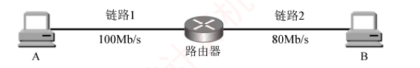
图 1.6 一个简单的分组交换网（A —链路1 100Mb/s— 路由器 —链路2 80Mb/s— B）
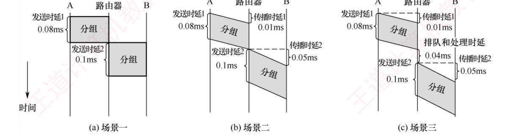
图 1.7 三种典型场景下总时延的分析：(a) 只算发送时延 0.18ms (b) 加传播时延 0.24ms (c) 再加处理与排队时延 0.28ms
我的补讲 · 图 1.7 的三个场景，就是同一道题的三个答案
书上用 1000B 分组把三个场景各算了一遍 → 潜台词是 ：
出题人只要挑一个场景问，把另外两个场景的答案摆进选项，就是一道好题
→ 所以能考 ：
做这类题第一件事是清点题干给了哪几种时延 。
场景 算哪些 总时延 一 只算两段发送时延 0.08 + 0.1 ＝ 0.18ms 二 ＋ 两段传播时延 0.01+0.08+0.05+0.1 ＝ 0.24ms 三 ＋ 路由器处理与排队 0.04ms 0.01+0.08+0.04+0.05+0.1 ＝ 0.28ms
⚠️
两段链路的发送时延必须分别算 ，因为带宽不同：
A → 链路1： 1000B×8 ÷ 100Mb/s ＝ 0.08ms
R → 链路2： 1000B×8 ÷ 80Mb/s ＝ 0.10ms ← 别偷懒乘 2
存储转发的定义决定了每过一个节点就要重付一次发送时延，而这次的时长由下一段 链路的带宽定。 3. 时延带宽积 · 往返时延 RTT · 信道利用率
必记 · 时延带宽积
时延带宽积 ＝ 传播时延 × 信道带宽 已发出的比特总数 ，
即已发出但尚未到达接收端的最大比特数 ，也称以比特为单位的链路长度 。
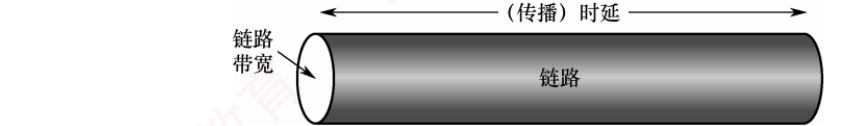
图 1.8 链路就像一条空心管道：长度＝传播时延，横截面积＝链路带宽，容积＝管道可容纳的比特数量
我的补讲 · 「管道」比喻要能默画，它同时解释三个结论
结论 管道图里的依据 提高带宽不能 缩短传播时延 管子变粗 ≠ 管子变短 时延带宽积 ＝ 管道容积 粗细 × 长度 发送与传播是独立 的两段 "往管里灌"和"在管里跑"同时发生，互不干扰
⭐
2023 真题就靠这个定义反推传播时延 ：题目不给传播时延，给"时延带宽积 ＝ 1000b"，
单向传播时延 ＝ 1000b ÷ 100Mb/s ＝ 0.01ms 。
这是本章唯一一处"给积求因子"的换算，也是那道题 B 与 D 之差的全部来源。
📌
另一个等价说法 ：「发送时延 ＝ 传播时延」⟺「
分组长度 ＝ 时延带宽积 」，
意思是
这条链路刚好装得下一个完整分组 。
1.1 习题 10 与综合题 02 考的都是这个等式。
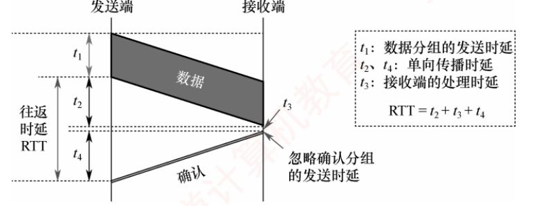
图 1.9 往返时延 RTT 的分析：t₁ 数据分组的发送时延、t₂/t₄ 单向传播时延、t₃ 接收端的处理时延，RTT ＝ t₂ + t₃ + t₄
陷阱 · RTT 含哪些、不 含哪些
RTT 包括 ：发送端与接收端之间的往返传播时延 + 接收端的处理时延
+ （互联网环境中）各中间节点的处理时延和排队时延。RTT 不 包括数据分组本身的发送时延 （图 1.9 里的 t₁），且忽略确认分组的发送时延。最常见的错法是把 RTT 当成"2 × 传播时延" ——那样会漏掉 t₃ 和中间节点的排队。
在拥塞的网络里，排队时延往往比传播时延还大，这正是 RTT 会剧烈波动的原因。
我的补讲 · 为什么定义里特意说"发出一个短 分组"
书上定义 RTT 时写的是"从发送端发出一个短 分组" → 潜台词是 ：
RTT 想测的是"网络往返一圈有多远/多堵"，而发送时延取决于你自己发的分组有多大 、与网络无关
→ 所以 要把分组取得足够短，让 t₁ 可以忽略。
这就是 t₁ 被排除在 RTT 之外的根本原因，不是随便规定的。
必记 · 信道利用率（并非越高越好）
信道利用率 ＝ 有数据通过的时间 ÷（有数据通过的时间 + 无数据通过的时间） 信道利用率并非越高越好 ：过低会浪费网络资源；过高则会导致排队时延显著增大，引发网络拥塞 。
（书上的比喻：公路上车流量很大时容易出现拥堵。）
我的补讲 · 「并非越高越好」是本节唯一反直觉的结论，正因此最爱被考
书上只给了一个交通比喻 → 潜台词是 背后有排队论
→ 所以 值得知道为什么：当到达率逼近服务率时，平均排队时延按 1/(1−ρ) 的形式发散 ——
ρ＝0.9 时时延是空载的 10 倍，ρ＝0.99 时是 100 倍。
所以真实网络的设计目标通常把利用率压在 70% 左右，而不是 100%。 四种时延里，只有排队时延会随利用率上升而爆炸 ——其余三种都有物理上限，
唯独队列可以无限长（直到缓冲区满，然后开始丢包 ⟹ 拥塞）。
这就是"利用率不能太高"的微观解释。 公式的分母是"总时间"不是"空闲时间" ，写成"有 ÷ 无"是常见错项。
知识串联 · 本节三个量，各自撑起后面一整节
时延带宽积 → ch3 的信道利用率分析 （停止等待协议为什么效率低）与
ch5 的 TCP 窗口大小 ：核心问题都是"要让管道不空转，窗口至少得装满这根管子 "。RTT → ch5 的超时重传时间 RTO （由 RTT 的加权平均 RTTs 与偏差 RTTd 算出）；
ch3 停止等待协议的信道利用率 公式里也要用它。本章定义里"含哪些不含哪些"，到那两章直接决定公式套得对不对。 拥塞 → ch4 的拥塞控制 与 ch5 的 TCP 拥塞控制 （慢开始/拥塞避免/快重传/快恢复）。
本章种下的这颗种子，到 ch5 会长成一整套算法。 瓶颈 → 组原 ch3 存储层次 、OS ch5 I/O 吞吐率 ——三科同一个木桶原理。
📄 p.15
1.2 计算机网络体系结构与参考模型
我的补讲 · 1.2 的读法与 1.1 完全相反
1.1 要动笔算，1.2 要抠字眼。 本节 13 页出 9 道真题（0.69 道/页，密度高于 1.1 的 0.33），
但九道题全部只考一件事：「这归哪一层管」。
→ 所以本节的正确读法是 ：每读到一个功能，立刻在心里问一句"它是哪一层的" ，
而不是顺着往下背。我在下面用一张贯穿全节的层次表把答案钉死。
1.2.1 计算机网络分层结构 考点追踪 2010 · 2017 · 2021
必记 · 体系结构 vs 实现（本章考了三遍的一条线）
体系结构（Architecture）＝ 计算机网络的各层及其协议的集合 ，
是对该网络及其所应完成功能的精确定义 。这些功能究竟由何种硬件或软件实现，属于「实现（Implementation）」问题。 体系结构是抽象的，而实现是具体的。
我的补讲 · 「体系结构不管实现」，本章换了三种问法考
书上只用一句话点了这条界线 → 潜台词是 它可以派生出无数道判断题
→ 所以能考 （本章 1.2 节果然考了三次）：
问法 错项长什么样 分层的目标不包括 什么 定义功能执行的方法 体系结构不描述 什么 协议的内部实现细节 关于 OSI 的描述错误 的是 定义了各层接口的实现方法
⟹ 凡是选项里出现「实现方法／实现细节／怎么做」，一律选它。
抽象与实现 这条界线在四科里各出现一次 ：
组原
ch4 的"指令系统是软硬件的分界面，同一条指令可用不同微结构实现"；
OS
ch1 的"操作系统提供的是虚拟机器，用户看不到具体硬件"；
数构的"逻辑结构 vs 存储结构"（同一个线性表可用顺序表或链表实现）。
四科同一句话：定义"做什么"的那一层，不管"怎么做"。
📌
一个好用的类比 ：
体系结构是接口文档，实现是源代码。
文档规定"传输层要提供可靠传输"，至于用什么数据结构存重传队列、定时器怎么写——
换个操作系统就完全不同，但都符合同一份体系结构。 必记 · 分层的五条基本原则
① 每层实现一种相对独立 的功能，以降低整个系统的复杂度。接口清晰、简洁 ，相互依赖尽可能少。各层功能的定义独立于具体实现方法 ，可采用最合适的技术来实现。下层对上层的独立性 ，上层单向使用下层提供的服务。标准化 工作。
必记 · 实体 / 对等层 / 对等实体
第 n 层的活动元素称为第 n 层实体 ——实体指任何可发送或接收信息的硬件或软件进程 ，
通常是某个特定的软件模块。不同机器上的同一层称为对等层，同一层的实体互为对等实体。 第 n 层向第 n+1 层提供的服务，是「其自身及以下所有层」所提供服务的总和。
第 n 层的实体称为服务提供者 ，第 n+1 层的实体称为服务用户 。
我的补讲 · 「服务的总和」这句话，解释了什么叫"透明"
书上说 第 n 层提供的服务是"其自身
及以下所有层 所提供服务的总和"
→ 潜台词是 ：上层拿到的是一个
打包好的能力 ，看不见里面有几层
→ 所以能考 「下层协议对上层是透明的」这句话为什么成立：
传输层向应用层提供的「可靠端到端传输」
实际打包了：网络层的路由 + 链路层的成帧检错 + 物理层的比特传输
应用层完全看不见这些细节 ⟹ 下层协议对上层是透明的 必记 ⭐ · PDU / SDU / PCI 三者关系
缩写 全称 在谁与谁之间 PDU 协议数据单元 对等层之间 传送的数据单位（水平）SDU 服务数据单元 相邻层之间 交换的数据单位（垂直）PCI 协议控制信息 本层用于控制协议操作的信息
n-SDU + n-PCI ＝ n-PDU ＝ (n−1)-SDU
各层 PDU 的俗名：
物理层＝比特流；数据链路层＝帧；网络层＝IP 分组；传输层＝TCP 报文段 或 UDP 数据报 。
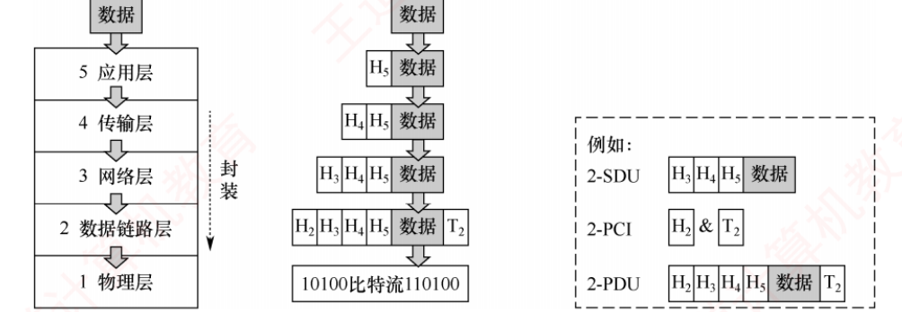
图 1.10 网络各层数据单元之间的关系（右侧例子：2-SDU ＝ H₃H₄H₅数据；2-PCI ＝ H₂ 与 T₂ 两块 ；2-PDU ＝ H₂H₃H₄H₅数据T₂）
我的补讲 · 这个式子要能自己推，不能硬背
第 n 层拿到上层交来的东西（(n+1)-PDU）
→ 在本层它被叫做 n-SDU 「服务数据单元＝别人托我传的」
→ 本层加上自己的 n-PCI 「协议控制信息＝我的首部」
→ 打包成 n-PDU 「协议数据单元＝我这层完整的一坨」
→ 交给下层，在下层它又变成 (n−1)-SDU
📌
助记：「协议是水平的、服务是垂直的」 ⟹ PDU 走水平、SDU 走垂直，两个词的方向天然对上。
⚠️
图 1.10 里有个细节别漏 ：
数据链路层的 PCI 是 H₂ 和 T₂ 两块 （首部 + 尾部），
其他层只有首部。
这是本章两道题（封装过程、不参与封装的层）的考点来源。 知识串联 · 各层的 PCI，后面会变成一张张具体的首部格式表
首部格式 本章的抽象 H₅H₄H₃H₂ ，到后面会变成可以逐字段考的实物：
ch3 以太网帧首部（目的 MAC 6B + 源 MAC 6B + 类型 2B + 尾部 FCS 4B）·
ch4 IP 数据报首部（固定 20B ：版本/首部长度/总长度/标识/标志/片偏移/TTL/协议/检验和/源 IP/目的 IP）·
ch5 TCP 首部（固定 20B ：源端口/目的端口/序号/确认号/数据偏移/六个标志位/窗口/检验和/紧急指针）与 UDP 首部（8B ）。
⟹ 本章的 n-PCI 三个字母，是后面三章要背的三张表。
陷阱 · "数据报"这个词在 408 里指三样不同的东西
说法 指什么 在哪一层 IP 数据报 IP 的 PDU 网络层 用户数据报 UDP 的 PDU 传输层 数据报服务 一种服务方式 （无连接、独立选路） 网络层的服务模式
第三个最容易搞混——它不是一个数据单元，而是与"虚电路服务"并列的服务类型。
📌
兜底规则 （书上 1.2.3 的【注意】）：
无论哪一层的协议数据单元，均可笼统称为"分组" 。
必记 · 分层结构含义的四条
① 第 n 层既利用第 n−1 层的服务实现自身功能，又向第 n+1 层提供本层服务。最低层只提供服务 ，是整个层次结构的基础；最高层面向用户提供服务 。上层只能通过相邻层的接口使用下层的服务，不能跨层调用。 对等层在逻辑上如同存在一条直接信道 ，表现为能够直接交换信息。
我的补讲 · 第 ④ 条是全节最有画面感的一句，务必能画出来
主机A 传输层 ←‥‥‥‥ 逻辑上的直连 ‥‥‥‥→ 主机B 传输层
↓ 实际上 ↑
网络层→链路层→物理层 ══信道══▶ 物理层→链路层→网络层
虚线是「协议」（水平、逻辑的），实线是「服务」（垂直、真实的）。
整个 OSI 图 1.12 就是这两种线的叠加。
🔗
这条到 ch5 会变成 「TCP 连接是逻辑连接，中间路由器根本不知道它存在」；
到
ch4 会变成「IP 层看不见 TCP 的连接状态」。
我的补讲 · 「不能跨层调用」为什么写成禁令而不是建议
书上在 1.2.1 和 1.2.2 各写了一遍这条 → 潜台词是 它是分层的硬约束
→ 所以 值得知道违反它会毁掉什么：
分层承诺 跨层调用后 下层协议对上层透明 上层被迫了解下层细节 各层功能定义独立于实现 换个底层实现，上层就得跟着改 接口清晰、依赖尽可能少 依赖关系变成网状，无法维护
三条分层原则一次全废——这就是它是禁令的原因。
（现实中确实有 raw socket 这类跨层手段，但那属于"绕过分层"的特例，考试按教材口径答"不允许"。） 📄 p.16
1.2.2 计算机网络协议、服务、接口的概念 考点追踪 2020
必记 · 协议（水平）
网络协议 ＝ 控制对等实体之间通信的规则集合，是水平的。 不对等实体之间不存在协议 ——节点 A 的传输层与节点 B 的传输层之间存在协议，
但节点 A 的传输层与节点 B 的网络层之间则没有协议 。
必记 ⭐ · 协议三要素
要素 规定什么 书上的例子 题目给什么就选它 语法 数据与控制信息的格式 TCP 报文段的结构 首部格式图 、位编号、字段方框语义 发出何种控制信息、完成何种动作 、做出何种应答 三次握手每次握手执行的操作 「收到 X 该做 Y」 同步 （时序）执行操作的条件 及事件的先后顺序 三次握手的时序关系 时序图 、时间轴、往返箭头、握手次数
我的补讲 · 三要素的判定只看"图上画了什么"，不做延伸推理
王道在本节配了两道对照题：一道给 TCP 首部格式图（答语法），一道给收发时序图（答时序，2020 真题）。
→ 潜台词是 ：这类题的解法是
看图形式 ，不是看题材
→ 所以能考 ：
两题题干都在讲 TCP，答案却不同 。
图上有时间轴 + 往返箭头 → 时序
图上只有字段方框 + 位编号 → 语法
文字说「收到 X 应答 Y」 → 语义
⚠️
「Ⅰ、Ⅱ和Ⅲ 全选」是这类题最大的诱惑 ——
"这张首部图不也隐含了字段含义吗？"
不隐含。图上根本没画。
只认图上实际画出来的东西。
⚠️
还有一组三元组容易串台：
协议三要素 ＝ 语法、语义、同步
OSI 三概念 ＝ 服务、接口、协议
└ 把「协议」放中间就看清了：它既是 OSI 三概念之一，本身又由三要素组成必记 · 接口与服务访问点 SAP
同一节点内相邻两层实体交换信息的逻辑接口 称为服务访问点（SAP） 。
每层只能与紧邻的上下层定义接口，不允许跨层定义接口。
第 n 层的 SAP 即为第 n+1 层访问第 n 层服务的入口。
我的补讲 · 四层 SAP 的具体形态，就是"分用"的全过程
书上正文没给 SAP 的具体形态，习题解析给了 → 所以能考 ，且这张表非常好用：
层 SAP 是什么 用来决定"再往上交给谁" 数据链路层 帧的"类型"字段 交给 IP 还是 ARP 网络层 IP 数据报的"协议"字段 交给 TCP(6) / UDP(17) / ICMP(1) 传输层 "端口号"字段 交给哪个应用进程 应用层 "用户接口" 交给用户
收到一个帧 → 看类型字段 → 是 IP ⟹ 交给网络层
→ 看协议字段 → 是 6 ⟹ 交给 TCP
→ 看端口号 → 是 80 ⟹ 交给 Web 服务器进程
→ 用户接口 → 显示给用户
⚠️
SAP 与"地址"方向完全不同 ：
IP/MAC 地址标识"哪台机器"（横向找人），
SAP 标识"交给上面哪个模块"（纵向分发）。 必记 ⭐ · 服务（垂直）与协议的四条本质区别
服务 ＝ 下层为紧邻的上层提供的功能调用，是垂直的。
协议 服务 方向 水平 （规范对等实体之间的通信）垂直 （下层通过层间接口向上层提供）可见性 对上层透明 （看不见细节） 上层只能 感知到这个 依赖 本层协议正确实现 ⟹ 才能向上提供服务 实现本层协议 ⟹ 又要依赖下层的服务 范围 — 并非某一层完成的全部功能都称为服务 ，能被上层实体感知并调用 的功能才构成服务
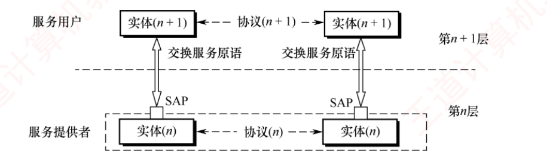
图 1.11 协议、接口、服务三者之间的关系（第 n+1 层实体＝服务用户 ，第 n 层实体＝服务提供者 ，中间通过 SAP 交换服务原语；同层之间的虚线是协议 ）
我的补讲 · 「功能 ⊋ 服务」这条最容易被忽略，却是判断题的正解
书上说 「
并非某一层完成的全部功能都能称为服务 ，只有那些能被上层实体
感知并调用 的功能，才构成服务」
→ 潜台词是 ：有些活儿这层干了，但上层根本不知道
→ 所以能考 「某一层完成的全部功能都称为该层提供的服务」这个错项。
举例：数据链路层做 CRC 校验并丢弃 错误帧
└ 这是它完成的功能 ，但上层根本不知道有帧被丢过（只看到"没收到"）
└ 上层能调用 的服务是「把一帧可靠地送到相邻节点」 必记 · 服务的三种分类（三个正交 的维度）
① 面向连接 vs 无连接 ——面向连接要求先建立连接并分配资源（如缓冲区），
全过程包括连接建立、数据传输、连接释放三个阶段 ；无连接无须预先建立连接，各分组独立传输，
通常称为"尽最大努力交付" ，属于不可靠服务。② 可靠 vs 不可靠 ——可靠服务具备检错、纠错和应答机制，确保数据正确、完整、有序 送达；
不可靠服务仅提供"尽最大努力交付"。③ 有应答 vs 无应答 ——有应答指接收方收到数据后由传输系统自动 返回应答（如文件传输 ）；
无应答指接收方不自动返回应答，需确认时须由高层协议或应用实现（如 WWW 服务中客户端收到网页后通常不向服务器发送应答 ）。
陷阱 ⭐ · 「面向连接」≠「可靠」，三个维度可自由组合
可靠 不可靠 面向连接 TCP 虚电路服务 （有连接但不保证可靠）无连接 （可由高层补上可靠性） UDP、IP 数据报服务
三个维度可以自由组合，共 8 种，不是只有"面向连接+可靠"和"无连接+不可靠"两种。
书上把服务分成三组正交的二分法，正是为了防止你把它们捆在一起。 我的补讲 · 「不可靠 → 可靠」怎么转化，这句话是整个互联网的设计纲领
书上说 「对于提供不可靠服务的网络，数据的可靠性需由
高层 保障。例如接收方校验数据完整性，
出错时通知发送方重传，
从而通过高层机制将不可靠服务转化为可靠服务 」
→ 潜台词是 ：可靠性不是网络的义务，而是端系统的选择
→ 所以 后面一连串"为什么"都有了答案：
网络层：IP —— 无连接、不可靠、尽最大努力交付
↑ 在这上面加一层
传输层：TCP —— 校验和 + 确认 + 序号 + 重传 ⟹ 可靠
UDP —— 什么都不加 ⟹ 你要快就用它
为什么 IP 不重传？为什么 UDP 存在？为什么路由器不保存连接状态？
答案都是这一条：可靠性被推到了两端。 （完整的来龙去脉见本章 1.3 疑难点 1。）
知识串联 · 服务的三组二分，到 ch4/ch5 各自展开成一节
面向连接 vs 无连接 → ch4 的虚电路服务 vs 数据报服务 （一张大对比表）；
ch5 的 TCP vs UDP 。本章的"三个阶段"到那里就是三次握手与四次挥手。 可靠 vs 不可靠 → ch3 的"以太网只检错不重传"（不可靠）
vs 滑动窗口协议（可靠）；ch5 的 TCP 可靠传输机制。有应答 vs 无应答 → ch3 的确认帧、ch5 的 ACK 与累积确认 。
本章综合题 03 讨论的"逐分组确认 vs 整文件确认"，正是 TCP 累积确认要解决的问题。
📄 p.17
1.2.3 OSI 参考模型和 TCP/IP 模型 考点追踪 2009 · 2013 · 2014 · 2016 · 2019 · 2021 · 2022
我的补讲 ⭐⭐ · 本节 6 道真题，全部靠这一张表秒杀
我把 OSI 七层的「层号 / PDU / 通信范围 / 寻址依据 / 专属关键词」并成一张表——
1.2 节的九道真题，八道能直接查表得到答案。
层号 层名 PDU 通信范围 靠什么寻址 专属关键词（见到就选它） 7 应用层 — 端到端 — 用户与网络的接口 6 表示层 — — 数据格式转换 、压缩、加解密、ASN.1、异构系统5 会话层 — — 会话管理 、同步点/检查点 、断点续传、对话管理4 传输层 报文段 端口号 端到端 、进程之间、复用与分用、连接管理3 网络层 IP 分组 主机到主机 IP 地址 路由选择 、拥塞控制、网际互联2 数据链路层 帧 节点到节点 MAC 地址 相邻节点 、组帧、差错检验、物理寻址1 物理层 比特流 比特 — 透明传输 、电气/机械特性、单工/半双工/全双工
黄底三层 ＝ 通信子网（点到点）；蓝底四层 ＝ 资源子网（端到端）。分界线就在第 3 层与第 4 层之间。
📌
七层口诀：「物链网传会表应」 ——自下而上七个字，考前在草稿纸角落写一遍。
陷阱 ⭐⭐ · 三个「通信范围」的定语，是 1.2 全部概念真题的钥匙
题干出现「两个相邻节点间 」「点到点」 → 数据链路层 （2022 真题）
题干出现「主机到主机 」「路由选择」 → 网络层
题干出现「端到端 」「进程之间」 → 传输层 （2009 真题）
⚠️
题干不加定语时答案是多个层 ：例如"哪一层有流量控制"，
答案是
第 2、3、4 层都有 ；
加了定语才唯一。
这是出题人控制难度的旋钮，读题时务必先圈定语。
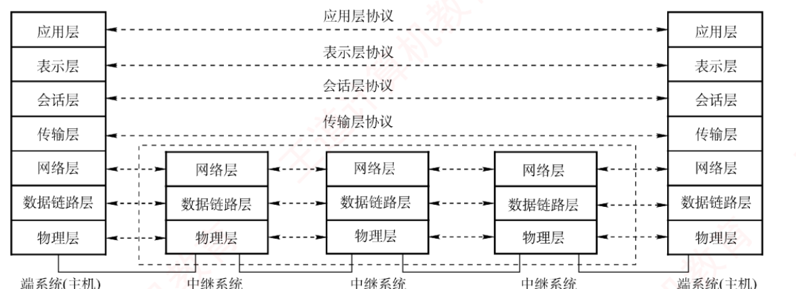
图 1.12 OSI 参考模型的层次结构。两端是端系统（主机）跑全 7 层 ，中间的中继系统只跑下 3 层 ；虚线＝协议（水平），实线＝真实数据通路
我的补讲 ⭐ · 图 1.12 一张图同时解释三道真题
结论 图上的依据 对应真题 传输层是自下而上第一个端到端层 第 4 层的虚线一路飞过 中继系统，中间没落地 2009 路由器最高做到第 3 层 中继系统那几列只画到第 3 层 2016 网络层及以下是逐跳 的 第 1～3 层的实线一段一段 连接 —
⭐
顺带解释了一个"为什么" ：
路由器根本没有传输层实体 ，
所以主机的传输层无从与路由器建立协议——
这就是"传输层是端到端"的图形化证据。 OSI 各层功能
必记 · 物理层（第 1 层）
传输单位是比特 。功能：在物理介质上为数据端设备透明地传输原始比特流 。机械特性 （形状、尺寸）与电气特性 （引脚数量与排列）；
② 通信链路上的编码意义与电气特征 。传输所用的物理介质（双绞线、光缆、无线信道）不属于 物理层协议范畴，而是位于其下方 ——
因此有人将物理介质视为"第 0 层" 。
陷阱 · 物理层管什么、不 管什么
物理层管 ： 用什么电信号表示 0/1 · 1 个比特持续多久
传输能否在两个方向上同时进行 （单工/半双工/全双工）
物理层不管 ：流量控制 · 差错控制 · 寻址 · 路由
⚠️
「传输能否两个方向同时进行」确实是物理层的功能 ，很多人误以为归链路层。
⚠️
「避免快速发送方"淹没"慢速接收方」是流量控制的标准描述句式 ，
见到它就往数据链路层/传输层想，绝不是物理层。 必记 · 数据链路层（第 2 层）
传输单位是帧 。核心表述：将物理层提供的「可能出错的物理连接」，
改造为「逻辑上无差错的数据链路」 ，将网络层交来的分组封装成帧，可靠地传送到相邻节点，
实现节点间的差错控制与流量控制 。在广播式网络的数据链路层中，还需解决对共享信道的访问控制问题。 物理寻址、组帧、流量控制、差错检验、数据重发 。
陷阱 · 数据链路层没有 拥塞控制
流量控制 vs 拥塞控制——全书最容易混的一对：
流量控制 拥塞控制 解决什么 接收方来不及收 网络整体来不及转 涉及几方 点对点 （收发两方）全网 （所有主机与路由器）哪些层有 数据链路层、网络层、传输层 只有网络层、传输层
理由很直白 ：拥塞是
整个网络 的现象，要看到全网才能控制；
数据链路层只看得见一段链路的两端 ，做不了。
必记 · 网络层（第 3 层）
传输单位是数据报（分组） 。主要任务：将分组从源主机传送到目的主机 ，为不同主机提供通信服务。核心功能：路由选择、拥塞控制、差错控制、流量控制、网际互联。 OSI 的网络层同时 提供有连接的虚电路服务和无连接的数据报服务。
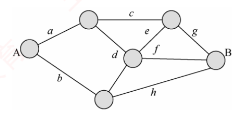
图 1.14 某网络结构图：A 到 B 存在多条路径（a-c-g、b-h 等），决定走哪条就是网络层的路由选择
必记 · 传输层（第 4 层）
负责不同主机中进程之间的端到端通信 ，提供连接管理、可靠传输、流量控制、差错控制 等服务。
⚠️ OSI 参考模型的传输层仅 提供面向连接的可靠服务。 复用与分用 ：复用＝多个应用进程可同时使用传输层的服务；
分用＝传输层能将接收到的数据准确交付给对应的上层进程。
我的补讲 · 「端到端」为什么从传输层才开始
书上说 传输层实现"端到端通信（基于
端口号 ）"
→ 潜台词是 ：
"端"指的是应用进程的端口，而端口号是传输层才引入的概念
→ 所以 网络层再努力也做不到端到端——
IP 地址只能定位到主机，定位不到进程。
没有端口 ⟹ 无法区分"哪两个进程在通信" ⟹ 谈不上端到端
⟹ 复用/分用也无从谈起
⟹ 这就是传输层存在的根本理由 必记 · 会话层（5）· 表示层（6）· 应用层（7）
会话层 ：管理不同主机上进程之间的会话 ，包括建立、维护和终止会话连接；
提供同步机制（SYN） ，引入检查点 功能——通信中断时可从最近的检查点恢复会话，
实现类似"断点续传" 的可靠性。表示层 ：解决异构系统间信息表示不一致 的问题。采用标准抽象语法定义数据结构，
通过标准编码（如 ASN.1 ）实现跨平台数据交换；数据压缩、加密与解密 也由该层处理。应用层 ：最高层，作为用户与网络的接口 ，为各类网络应用提供访问网络环境的手段。
陷阱 · 「连接」与「会话」是两个词，别混
传输层和会话层都做"建立、维护和终止"，但对象不同：
传输层 会话层 对象 端到端连接 进程间的会话 典型机制 三次握手、四次挥手 检查点、同步点、断点续传 题干特征词 端到端 、连接会话 、对话、同步点
⚠️
加密归哪层 ：OSI 口径是
表示层 ；现实中 TLS/SSL 跑在传输层与应用层之间。
考 OSI 模型时一律答表示层。 必记 · 表 1.2 OSI 各层的任务和功能对比
层 功能 应用层 提供应用与网络的接口 表示层 数据格式转换 会话层 会话管理 传输层 复用和分用 、差错控制、流量控制、连接管理、可靠传输管理网络层 路由选择 、拥塞控制 、网际互联 、差错控制、流量控制、连接管理、可靠传输管理数据链路层 差错控制、流量控制 物理层 定义电路接口参数、信号的含义/电气特性等
⚠️
注意「差错控制」和「流量控制」在第 2、3、4 层都 出现 ——
题目靠
定语 区分（相邻节点/整个网络的拥塞/端到端）。
我的补讲 · 「为 X 提供服务的是谁」＝把 X 的层号减 1
本节考了三次这个套路，全部靠同一条规则：
问法 指向 例（会话层） 「为 X 提供服务 的是」 X 的下 层 传输层（2014 真题 ） 「X 为谁提供 服务」 X 的上 层 表示层 「X 的相邻层 」 上下两 个 传输层 + 表示层
⚠️
2014 真题最大的陷阱是选表示层 ——表示层确实与会话层相邻，
但它在会话层上面 ，是服务用户 ，不是提供者 。
相邻 ≠ 提供服务，方向必须分清。
🔗
2013 真题是它的镜像 ：问"应用层的相邻层"（向下找到表示层，答"数据格式转换"）。
两道相隔一年的真题被放在同一节，就是要你建立"服务永远自下而上"的条件反射。 知识串联 · OSI 每一层，都是本书后面一整章
物理层 → ch2 ：奈奎斯特与香农公式、编码与调制、传输介质、物理层设备。
本章说的"电气特性、比特持续多久"，到那里会变成具体的码元速率与波特率计算。 数据链路层 → ch3 ：组帧、差错控制（CRC/海明码）、流量控制与滑动窗口、
介质访问控制、局域网与以太网、链路层设备。本章一句"改造为逻辑上无差错的数据链路"，那里要用 77 页展开。 网络层 → ch4 ：IPv4/IPv6、子网划分与 CIDR、路由算法与协议、IP 多播、网络层设备。
本章的"路由选择"四个字，是全书最大一章（97 页）的题目。 传输层 → ch5 ：UDP 与 TCP、连接管理、可靠传输、流量控制与拥塞控制。
本章的"复用与分用""端到端"在那里落地为端口号与套接字。 应用层 → ch6 ：网络应用模型、DNS、FTP、电子邮件、万维网。
知识串联 · 数据链路层的三样东西，在别处各出现一次
帧编号 "序号错误的帧"这个场景，到 ch3 的滑动窗口协议 （停止等待/GBN/SR）
就是触发"回退 N 帧"的那一刻；而滑动窗口这套机制，ch5 的 TCP 会在传输层再用一遍 ——
这正是 408 跨科枢纽里点名的「滑动窗口 → TCP / 数据链路层」。 尾部 T₂ 只有数据链路层同时加首部和尾部，因为尾部放的是 FCS（帧检验序列） ——
校验码必须放在数据后面，发送方是边发边算 的。ch3 讲 CRC 时会正面解释。 共享信道 "广播式网络还需解决共享信道的访问控制"这半句，
就是 ch3 的 3.5 介质访问控制 整整一节。
📄 p.20
TCP/IP 模型 考点追踪 2011 · 2021
必记 · TCP/IP 四层及其协议
TCP/IP 层 对应 OSI 主要协议 应用层 会话层 + 表示层 + 应用层 HTTP、SMTP、DNS、RTP、FTP 传输层 传输层 TCP （面向连接、可靠、单位＝报文段 ）UDP （无连接、不保证可靠、单位＝用户数据报 ）网际层 网络层 IP （核心，无连接不可靠，单位＝IP 数据报）ARP、ICMP、IGMP 网络接口层 物理层 + 数据链路层 TCP/IP 未规定具体功能或协议细节
因其广泛应用，
TCP/IP 模型已成为事实上的国际标准 。
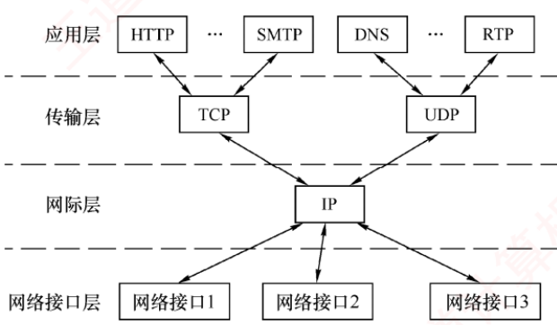
图 1.15 TCP/IP 模型的层次结构及各层的主要协议。注意这是一个"沙漏"：上面应用千变万化，下面接口千变万化，中间的腰只有一个 IP
我的补讲 ⭐ · 沙漏形状 ＝ 两句设计哲学
书上说 「
Everything over IP ，即各种应用均可构建于 IP 之上；
IP over Everything ，即 IP 可运行于任意底层网络之上。正是这种高度的通用性与灵活性，
推动了互联网发展至今日的规模」
→ 潜台词是 ：IP 之所以能不变，是因为两头都被解耦了
→ 所以能考 「网络接口层为什么不规定具体协议」：
Everything over IP ── 向上 解耦 ⟹ 新应用不用改网络
IP over Everything ── 向下 解耦 ⟹ 新链路技术不用改协议
└ 制度保障：TCP/IP 对网络接口层的唯一要求只是
"主机能通过某种底层协议接入网络以传送 IP 分组" 正因为不规定，Wi-Fi 6、5G、卫星互联网才能直接接上 IP，不用修改 TCP/IP 模型本身。 必记 ⭐⭐ · TCP/IP 与 OSI 的四条差异（本节最贵的一张表）
# OSI TCP/IP 1 精确定义了"服务""协议""接口"三个核心概念 （最大贡献）对这三者未做明确区分 2 7 层 4 层 （表示+会话并入应用；物理+链路并为网络接口）3 先有模型，后制定协议 ；通用性好，适合描述各类网络先有协议栈，后归纳出模型 ；不适用于任何其他的非 TCP/IP 模型 4 网络层两种服务都有 ；传输层仅面向连接 网际层仅无连接 ；传输层两种都有 （UDP/TCP）
相似之处（三条） ：① 均采用
分层体系结构 ，各层功能大体相似；
② 均基于
独立协议栈 的概念；③ 均可解决
异构网络互联 问题。
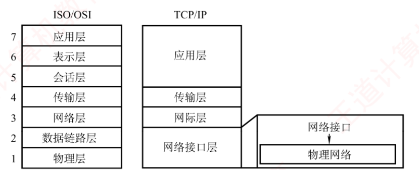
图 1.16 TCP/IP 模型与 OSI 参考模型的层次对应关系（两处合并：上面 7/6/5 → 应用层；下面 2/1 → 网络接口层 ）
陷阱 ⭐⭐ · 第 4 条差异——两个模型在这里正好完全对调
题干说 ISO/OSI ，问"可同时提供无连接和面向连接服务的是" → 网络层
题干说 TCP/IP ，问同一句话 → 传输层
书上明写：「两类协议栈的区别是联考的考点，而这个区别是常考点。」
📌
为什么会对调（理解了就不会记反） ：
OSI 的思路 ： 网络本身要能兜底 ⟹ 网络层备两种服务
传输层只需在可靠基础上做端到端 ⟹ 只做面向连接
TCP/IP 的思路： 可靠性应由端到端机制保障
⟹ 网际层做到最简：只提供无连接的 IP
⟹ 选择权交给传输层：要可靠用 TCP，要快用 UDP
一句话：TCP/IP 把复杂度从网络中间推到了两端。 我的补讲 · 第 3 条差异派生出两个可考的推论
推论 为什么 OSI 对"服务/协议/接口"分得清 先有理论框架，概念自然清晰（＝第 1 条差异） TCP/IP 模型不能 用来描述别的网络 它是从一份具体实现里倒推 出来的
⭐
但历史的结果是理论派输了 ：OSI 的设计者「从一开始就致力于构建一个全球统一的标准。
从技术角度看，这种对理想化架构的追求，导致其
软件实现结构复杂、运行效率低下 ；
加之
缺乏市场与商业驱动力 ，最终使其未能实现预期目标。」
而 TCP/IP「凭借
简洁高效 的设计，在实际应用中占据了主导地位。」
⚠️
由此产生一个高频错项 ：「ISO 设计了 OSI/RM，
即实际执行的标准 」——
错在后半句。OSI 是法律上的标准，TCP/IP 才是事实上 的标准。 背景 · 考试只考一句话，其余是故事
「OSI 为什么失败」那一整段（设计理想化、实现复杂、效率低、缺乏市场驱动力）属于背景 ，
真题里它只以一个错误选项 的形式出现：「ISO 设计的 OSI/RM 即实际执行的标准 」。
带走一句即可：OSI 是国际标准，TCP/IP 是事实标准。
其余关于 ARPAnet 历史的内容（世界上第一个计算机网络、Internet 的前身）
也只作为常识性选项出现，知道"第一个是 ARPAnet、Internet 起源于它"就够了 。
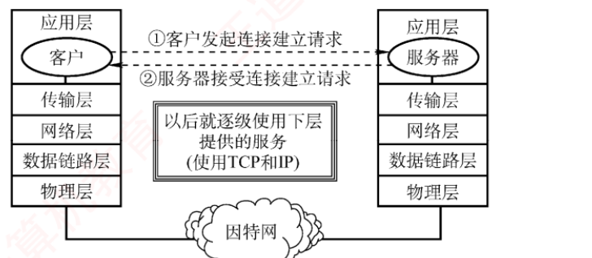
图 1.17 网络 5 层协议的体系结构模型——融合两家优点，本书（及 408 考纲）全书按它组织
我的补讲 ⭐ · 五层模型这张表，就是《计算机网络》的目录
五层模型 取自哪一家 对应本书 应用层 TCP/IP（合并会话层与表示层） ch6 应用层（37 页）传输层 两家一致 ch5 传输层（43 页）网络层 OSI 的叫法 ch4 网络层（97 页，全书最大）数据链路层 OSI（把网络接口层拆开） ch3 数据链路层（77 页）物理层 OSI（把网络接口层拆开） ch2 物理层（20 页，全书最薄）
⟹ 第 2–6 章正好是五层模型自下而上的五层，第 1 章讲的是这个模型本身。
看懂这一点，全书结构就不会乱。
📌
五层模型各取了什么 ：
取 TCP/IP 的：上面三层合并（会话、表示层在实践中很少单独实现）
取 OSI 的： 下面两层拆开（物理层与数据链路层差别巨大 ，合并没道理）
⚠️
但考试仍会问 OSI 七层和 TCP/IP 四层 （2016/2019/2021 都是）——
三套模型都要会。
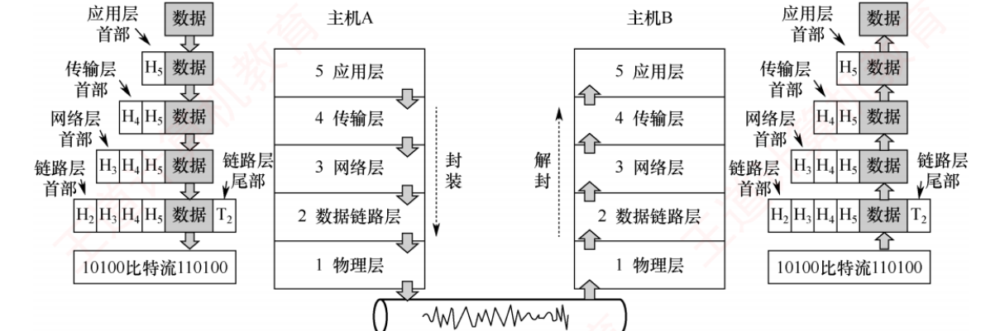
图 1.18 协议栈的通信过程示例：主机 A 层层封装 （数据 → H₅数据 → H₄H₅数据 → H₃H₄H₅数据 → H₂H₃H₄H₅数据T₂ → 比特流），主机 B 逆向逐层解封
我的补讲 ⭐ · 图 1.18 的两个细节，各对应一道题
细节 对应的考点 只有链路层同时有 H₂ 和 T₂ （首部+尾部）「数据链路层在分组上仅 增加源和目的物理地址」是错项 物理层那一格没有新加的框 「不参与数据封装工作的是物理层 」——它没有下一层可交
🔗
与 2017 真题咬合得很紧 ：那题说"除
物理层和应用层 外，其他各层均引入 20B 开销"——
物理层被排除正是因为它不封装；应用层被排除是因为那 400B 就是它要发的数据本身。
OSI 7 层，除首尾两层 ⟹ 中间 5 层 × 20B ＝ 100B
效率 ＝ 400 ÷ (400+100) ＝ 80%
四个选项 80/83/87/91% ＝ 数成 5/4/3/2 层的一条等差链
⚠️
若换成 TCP/IP 四层，只有 3 层加开销 ——
这类题必须先看清题目说的是哪个模型。 知识串联 · 封装/解封这套动作，在四科里各出现一次
分层与封装 网络的"层层加首部、逐层拆首部"＝
组原 ch1「计算机系统层次结构」 的高级语言→汇编→机器语言逐层翻译＝
OS ch1「虚拟机器」 的每层只看见下层提供的抽象。
三科都在讲同一件事：用分层把复杂度关进盒子，每层只对相邻层负责。 协议栈头部开销 2017 真题算的"传输效率"，与 1.1.4 节的
「分组交换使信息量增大约 5%～10%」是同一个量；到 ch3/ch4/ch5 会具体化为
帧首部 18B、IP 首部 20B、TCP 首部 20B ——那时你要能一口报出"净荷率"。
📄 p.28
1.3 本章小结及疑难点
我的补讲 · 这两页别跳过——它是全章唯一讲"为什么"的地方
1.3 只有 2 页、0 道真题，看着可以跳 → 潜台词是 ：
前面 27 页讲的都是"是什么"，
只有这里讲"为什么这么设计"
→ 所以 它的价值是：
三个疑难点分别是前面三组考点的根因 。
疑难点 它解释了前面哪个考点 ① 为什么 IP 不可靠 OSI 与 TCP/IP 的第 4 条差异 （谁提供无连接/面向连接） ② 端到端 vs 点到点 2009 真题 （自下而上第一个端到端层）＋ 三个"通信范围"定语③ 传输速率 vs 传播速率 1.1.6 的四种时延 与时延带宽积
⟹ 读完前面觉得"记不住"的地方，多半在这两页能找到解释。 疑难点 ① 互联网使用的 IP 是无连接的，传输不可靠，为什么当初不设计成可靠的？
必记 · 端到端可靠传输的设计哲学
设计
ARPAnet （互联网的前身）时的关键争论是：
「谁应该负责保证传输的可靠性？」
观点 主张 理由 像电信网那样 由通信网络本身 确保 普通电话机是"哑终端" ，不具备智能处理能力，只能靠网络兜底 最终采纳 由用户主机（端系统） 负责 计算机是智能终端 ，具备强大处理能力；网络结构更简单、成本更低、扩展性更强
⟹ 最终采纳「端到端可靠传输」的设计哲学：在网络层使用简单、无连接、不可靠的 IP 协议，
而在传输层通过面向连接的 TCP 协议实现端到端的可靠性。
这样既降低了网络基础设施的复杂性和成本，又确保了应用所需的可靠通信。
知识串联 · 这一条设计哲学，是后面四章的总纲
端到端原则 它直接决定了：
ch4 的 IP 为什么 只做尽力而为、不重传、不保证有序（网络中间要尽量简单）；
ch4 的路由器为什么 不保存连接状态（无连接 ⟹ 无状态 ⟹ 易扩展）；
ch5 的 TCP 为什么 要自己做序号、确认、重传、重排（可靠性责任在端）；
ch5 的 UDP 为什么 能存在（不需要可靠的应用可以拒绝为它付费）。
一句话记住：复杂度被推到了两端，网络中间保持简单。
知识串联 · 「哑终端 vs 智能终端」在 OS 和组原里也各有一个版本
谁来兜底 网络把可靠性交给端系统，因为端系统有 CPU ；
OS ch5 把 I/O 的效率交给缓冲区与 DMA ，因为CPU 太贵不能干等 ；
组原 ch3 把访存速度交给Cache ，因为主存跟不上 CPU 。
三处都是同一种判断：把工作分配给能力更强的那一侧。
疑难点 ② 端到端通信和点到点通信有什么区别？ 对应 2009 真题
必记 ⭐ · 三句原话
① 由物理层、数据链路层和网络层构成的通信子网 负责提供主机到主机 的通信服务，
而传输层 负责为主机上的应用进程提供端到端 的通信服务。点到点通信 指主机到主机之间的数据传递，不涉及具体的应用进程 ；
它只负责把数据从一台主机送到另一台主机，但无法识别是哪两个进程在通信 ——这一任务由更高层完成。端到端通信建立在点到点通信的基础之上 ，通过多段点到点链路串联 ，
最终实现不同主机上应用进程之间 的通信。这里的"端"指的是应用进程的端口 。
端到端通信真正面向的是用户程序之间的交互，而不仅仅是机器之间的连接。
我的补讲 · 两者不是并列关系，是上下层 关系
书上说 "端到端通信
建立在 点到点通信的基础之上"
→ 潜台词是 ：
一条端到端连接的底下，铺着若干段点到点链路
→ 所以能考 「点到点通信可以识别是哪两个进程在通信」这个错项。
点到点：只知道「数据从主机 A 到主机 B」
└ 因为它只有 IP 地址 ，只能标识主机
端到端：知道「A 上的进程 P₁ 到 B 上的进程 P₂」
└ 因为它有 端口号 ，能标识进程
⭐
这正是图 1.12 里"第 4 层虚线飞过中继系统、第 1–3 层实线一段段连"的含义。 知识串联 · 「端到端 vs 点到点」这把刀，切遍了后面四章
端到端 ch3 的流量控制是相邻节点之间 （点到点）；
ch5 的 TCP 流量控制是端到端 ——同名机制、不同范围，2022 真题正是考这一对。 寻址三级 ch3 用 MAC 地址找相邻节点 、ch4 用 IP 地址找主机 、
ch5 用端口号找进程 ——三章各管一级，本章把三级并排摆出来了。 路由器无传输层 由本条可推出：路由器只跑下三层 （图 1.12）⟹
ch4 的路由器不理解 TCP 连接、ch5 的 TCP 连接对中间设备完全透明。
疑难点 ③ 如何理解传输速率和传播速率？
必记 · 两个速率各管一件事
传输速率 ：主机或路由器在数字信道上发送数据的速率 ，单位 比特/秒（b/s） 。传播速率 ：电磁波在物理介质中向前传播的速度 ，单位 米/秒（m/s） 。200m ；链路带宽 1Mb/s ⟹ 主机 1μs 可向链路发送 1 比特 。
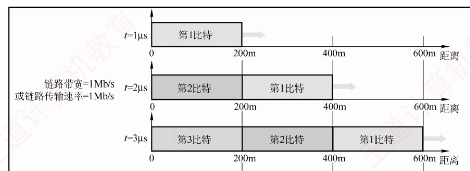
图 1.19 传输速率与传播速率的区别（三帧快照：t=1μs 第 1 比特到 200m；t=2μs 第 2 比特发出、第 1 比特到 400m；t=3μs 第 3 比特发出、第 1 比特到 600m）
必记 ⭐ · 书上加粗的结论
链路上同时存在多少比特，取决于「传输速率（带宽）」；
而每个比特在某一时刻位于何处，取决于「传播速率」。
我的补讲 ⭐ · 图 1.19 是全章最好的"直觉修正器"
它一次性解释了三个此前只能死记的结论：
结论 图里的依据 提高带宽不能 缩短传播时延 灌得更密 ≠ 跑得更快 时延带宽积 ＝ 管道容积 t=3μs 时管里有 3 个比特 ＝ 传播时延 × 带宽 发送时延与传播时延是独立 的两段 "灌"的动作与"跑"的动作同时发生，互不干扰
📌
把图 1.8（空心管道）和图 1.19（三帧快照）合起来看 ：
管道的粗细 由带宽决定（每秒灌几个比特），管道的长度 由传播速率与距离决定（跑完全程要多久），
两者相乘就是管里装着多少比特。 这就是时延带宽积。 知识串联 · 两个速率的区分，是 ch2 与 ch3 的地基
速率的三个名字 本章的"传输速率"到 ch2 会分裂成
比特率（b/s） 与波特率（baud，码元/秒） 两个量，靠 比特率 ＝ 波特率 × log₂V 换算——
那是 ch2 最爱考的一处，本章先把"速率的单位一律是 b/s"钉死。 长肥管道 时延带宽积大的链路（大带宽 × 大时延，如卫星链路）
在 ch3 会让停止等待协议的信道利用率低到不能忍 ⟹ 必须用滑动窗口 ；
在 ch5 会要求 TCP 用大窗口 才能填满管道。
"卫星链路带宽再高也没用，传播时延 270ms 是硬的"——那句话的根据就在本页。
收尾 · 本章一页纸
必记 · 把 29 页压成两条主线
主线一（1.1，计算）：一个母公式 + 一张对比表
T ＝ k·r + (m−1)·r （＋ k·p 若算传播时延）
k ＝ 链路段数（＝中间设备数 + 1） m ＝ 分组数 r ＝ 每段发送时延
各段速率不同时：稳态节拍 ＝ max(各段发送时延) ，即瓶颈段
表 1.1 九行中，
电路交换只在前三行占优 （完成时间最少、无存储转发时延、无缓存开销），其余六行分组交换赢。
主线二（1.2，概念）：一张层次表 + 三个定语
「相邻节点 ／点到点」→ 数据链路层（MAC 地址）
「主机到主机 ／路由」→ 网络层（IP 地址）
「端到端 ／进程之间」→ 传输层（端口号）
「为 X 提供服务的是谁」 → X 的层号减 1 我的补讲 · 考前十分钟只看这六条
① 母公式 T ＝ (k+m−1)·r，k 数的是链路段数 不是设备数。传播时延只认距离和介质 ，带宽再高也改不了它。RTT ＝ 往返传播 + 接收端处理 ，不含 数据分组本身的发送时延。木桶原理 ：可用带宽/吞吐量 ＝ 沿途最小的那一段。OSI 与 TCP/IP 在"哪层提供哪种服务"上完全对调 ——先看题干说的是哪个模型。路由器 3、交换机 2、集线器 1 ；物理层不封装 ；只有链路层加尾部 。
知识串联 · 本章埋下的六颗种子，分别在哪一章发芽
存储转发 → ch3 交换机的转发方式（存储转发 vs 直通）· ch4 路由器转发。流水线 → ch3 滑动窗口的连续发送 · 组原 ch5 指令流水线（公式同构 ）。时延带宽积 → ch3 信道利用率 · ch5 TCP 窗口大小。拥塞 → ch4 拥塞控制 · ch5 TCP 慢开始/拥塞避免/快重传/快恢复。分层与封装 → 全书每一章都在给某一层加首部 · 组原 ch1 系统层次结构 · OS ch1 虚拟机器。端到端原则 → ch4 IP 尽力而为 · ch5 TCP 可靠传输 · 这是整个互联网的立国之本 。